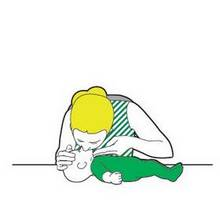
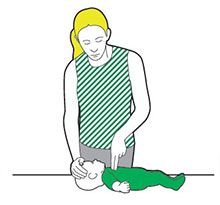

If your baby is not responding to you and you think they are unresponsive try to see if they react when you gently tap or flick the sole of their foot.
If they do not wake up or respond to you they are likely to be unresponsive. Check to see if they are still breathing normally.
If they are unresponsive and not breathing normally open their airway and check their breathing again by looking for chest movement, listening for the sounds of normal breathing and seeing if you can feel their breath on your cheek.
If they are not breathing normally, you need to start CPR (cardiopulmonary resuscitation – a combination of chest compressions and rescue breaths) straight away.
Steps
- If someone is with you, get them to call 999 or 112 for emergency help.
- If you’re on your own, you need to give one minute’s worth of CPR before you can call for help. This involves giving chest compressions and rescue breaths to keep the baby’s circulation going.
How to perform CPR on a baby
- Place the baby on their back on a firm surface at about waist height in front of you, or on the floor.
- Give five initial rescue breaths before starting the sequence of 30 chest compressions and two rescue breaths.
Step 1 of 3: How to give a rescue breath to a baby
- If there is anything in their mouth pick it out and ensure the airway is clear and open.
- Take a breath in and place your lips around the baby’s mouth and nose to form an airtight seal.
- If you cannot make a seal around the mouth and nose, close the baby’s mouth and make a seal around the nose only.
- Blow steadily into the mouth until the chest rises.
- Remove your mouth and allow the chest to fall.
- Repeat four times more.
- Now Give 30 chest compressions.

Step 2 of 3: How to give a chest compression to a baby
- Place two fingertips of your lower hand on the centre of the baby’s chest.
- Press down vertically on the breastbone, and press the chest down by at least one-third of its depth.
- Release the pressure without moving your fingers from their chest. Allow the chest to come back up fully – this is one compression.
- Repeat this 30 times, at a rate of about twice a second – the speed of the song ‘Staying Alive’.
- Now give two rescue breaths.
- Carry on giving 30 chest compressions followed by two rescue breaths for as long as you can, or until help arrives.
- If the baby starts breathing normally again, stop CPR and put them in the recovery position.

Step 3 of 3: How to put a baby in the recovery position
- Cradle them in your arms, with their head tilted downwards. This will keep their airway open and stop them choking on their tongue or breathing in any vomit. Continue until help arrives.